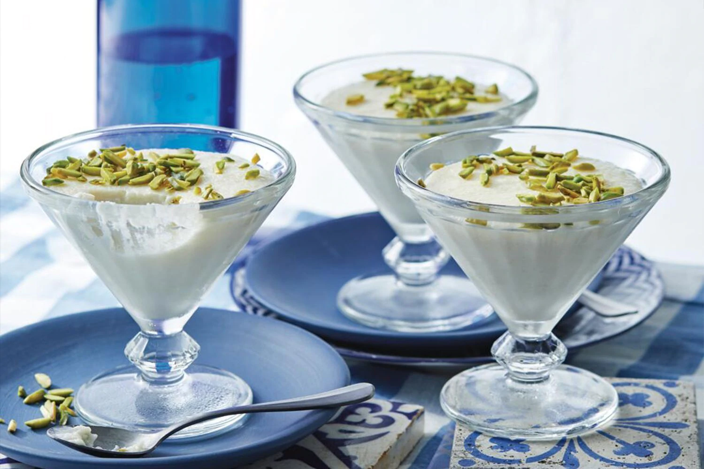
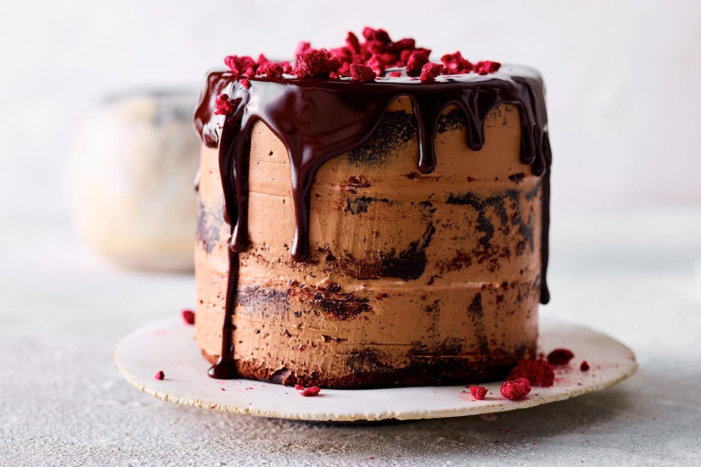

chocolate and ginger teacake
ingredients:
- 5 chai teabags (or use black teabags)
- 3/4 cup (270g) golden syrup
- 1 1/2 tbs finely grated ginger
- 2 cups (300g) plain flour
- 2 tsp baking powder
- 1/2 cup (50g) Dutch-process cocoa powder

Sticky ginger pudding
ingredients:
- 1 3/4 cups (260g) self-raising flour
- 1 1/2 tsp ground ginger
- 1/4 tsp bicarbonate of soda
- 100g dark muscovado sugar
- 2 tbs treacle
- 120g unsalted butter, chopped, melted


Muhallabia (Middle Eastern milk pudding)
ingredients:
- 1 1/2 tbs cornflour
- 4 cups (1L) cold milk
- 100g caster sugar
- 3/4 cup (75g) almond meal
- 1 1/2 tbs orange blossom water
- 2 tbs chopped pistachios


Chocolate, coconut and cherry sponge
ingredients:
- 8 eggs, separated, plus 4 eggwhites
- 310g pure icing sugar, sifted
- 50g unsalted butter, melted and cooled
- 80g good-quality dark cocoa, sifted, plus extra to dust
- 40g cornflour, sifted
- 40g self-raising flour, sifted